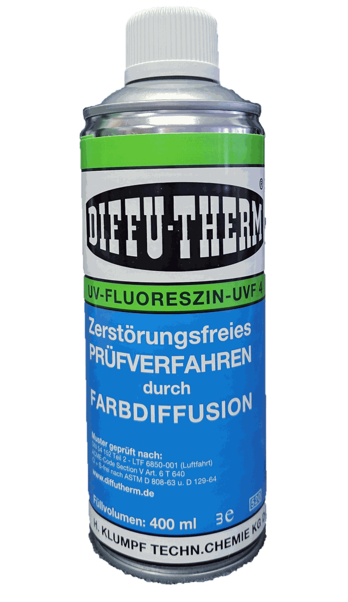

Chất thẩm thấu PT Diffu-Therm
Dung dịch thẩm thấu, thuốc hiện hình và cleaner Diffu-Therm cho kiểm tra PT/NDT mối hàn, đúc, gia công cơ khí theo DIN EN ISO 3452 và ASME Section V.
Tra mã Diffu-Therm, chọn đúng chất thẩm thấu, thuốc hiện hình, cleaner, bột từ và hệ UV. Fast Group hỗ trợ SDS/manual, tiêu chuẩn DIN/ASME, RFQ, CO/CQ và giao hàng chính hãng cho nhà máy, QA/QC, EPC, dầu khí.
Chọn nhanh theo phương pháp kiểm tra để tìm đúng mã, đúng quy cách đóng gói, đúng tài liệu SDS/manual và gửi RFQ hiệu quả.
Dung dịch thẩm thấu, thuốc hiện hình và cleaner Diffu-Therm cho kiểm tra PT/NDT mối hàn, đúc, gia công cơ khí theo DIN EN ISO 3452 và ASME Section V.

Bột từ, hỗn dịch từ đen/huỳnh quang và nền tương phản Diffu-Therm cho kiểm tra MT chi tiết ferromagnetic theo DIN EN ISO 9934-2.

Bộ CDR, CEA, CRE Diffu-Therm cho kiểm tra thẩm thấu ở nhiệt độ đến 200°C, phục vụ bảo trì nóng, hàn và kiểm tra hiện trường.

Dung dịch thẩm thấu UV, developer UV và bột hiện hình Diffu-Therm cho kiểm tra huỳnh quang dưới đèn UV, phát hiện khuyết tật rất nhỏ.
Các mã dưới đây phủ các intent mua hàng quan trọng: penetrant, developer, cleaner, bột từ đen/huỳnh quang và hệ nhiệt độ cao.
Chất thẩm thấu màu đỏ, không phẩm màu azo

Chất thẩm thấu màu đỏ, không phẩm màu azo

Thuốc hiện hình, rửa được

Dung dịch tẩy rửa đa năng
Huyền phù bột từ huỳnh quang

Huyền phù bột từ màu đen
Chất thẩm thấu huỳnh quang UV
Chất thẩm thấu màu đỏ chịu nhiệt 200°C
Trang Diffu-Therm được tổ chức theo logic kỹ thuật NDT: phương pháp kiểm tra, loại vật tư, điều kiện sử dụng, tiêu chuẩn, quy cách đóng gói và tài liệu an toàn. Nội dung không công bố giá khi chưa có price list chính thức.
Blog đóng vai trò supporting content, đẩy internal link về danh mục và mã sản phẩm có khả năng chuyển đổi cao.
Giải thích bốn loại chứng từ theo EN 10204, vì sao 3.1B là loại hay bị yêu cầu nhất trong dự án dầu khí, và cách ghi đúng yêu cầu chứng từ vào RFQ vật tư NDT.
Giải thích cơ chế ăn mòn ứng suất và giòn do lưu huỳnh, halogen tồn dư từ chất thẩm thấu và bột từ; vật liệu nào bị giới hạn, cần hỏi chứng từ gì và cách ghi vào RFQ.
Ba loại chỉ thị trong PT và MT — chỉ thị thật, chỉ thị không liên quan và chỉ thị giả; nguyên nhân từng loại, cách xác nhận lại và cách tránh báo cáo sai.
So sánh kiểm tra thẩm thấu PT và kiểm tra hạt từ MT theo vật liệu, loại khuyết tật, điều kiện hiện trường và chi phí; kèm cây quyết định và các trường hợp phải dùng cả hai.